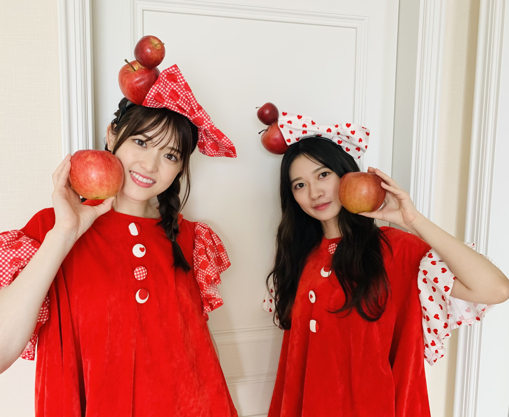
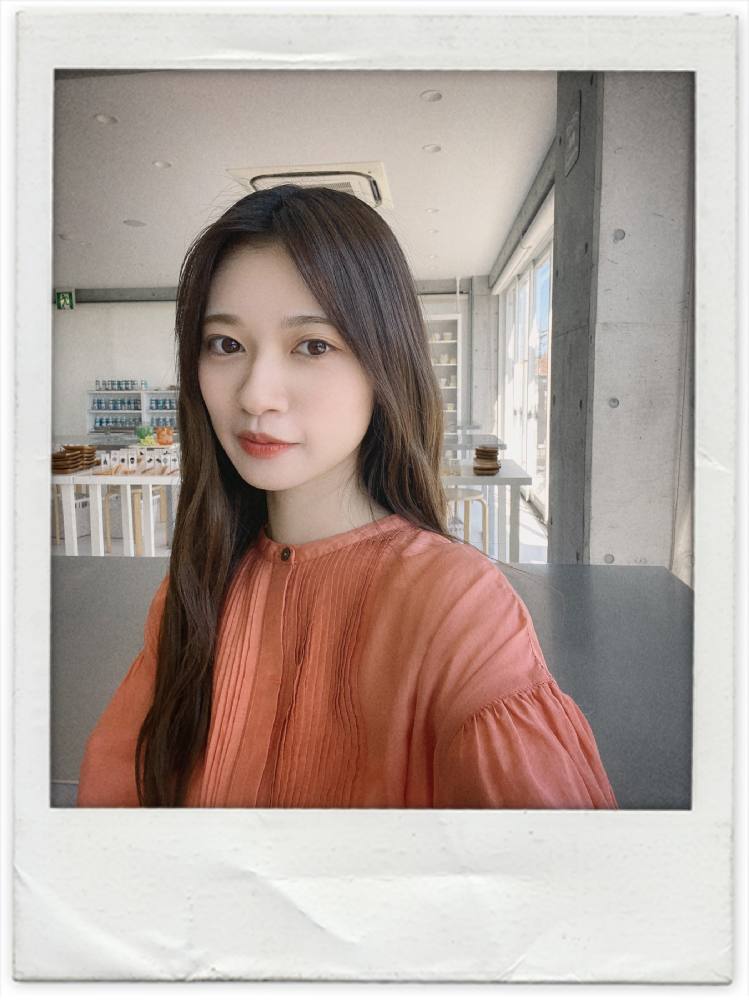
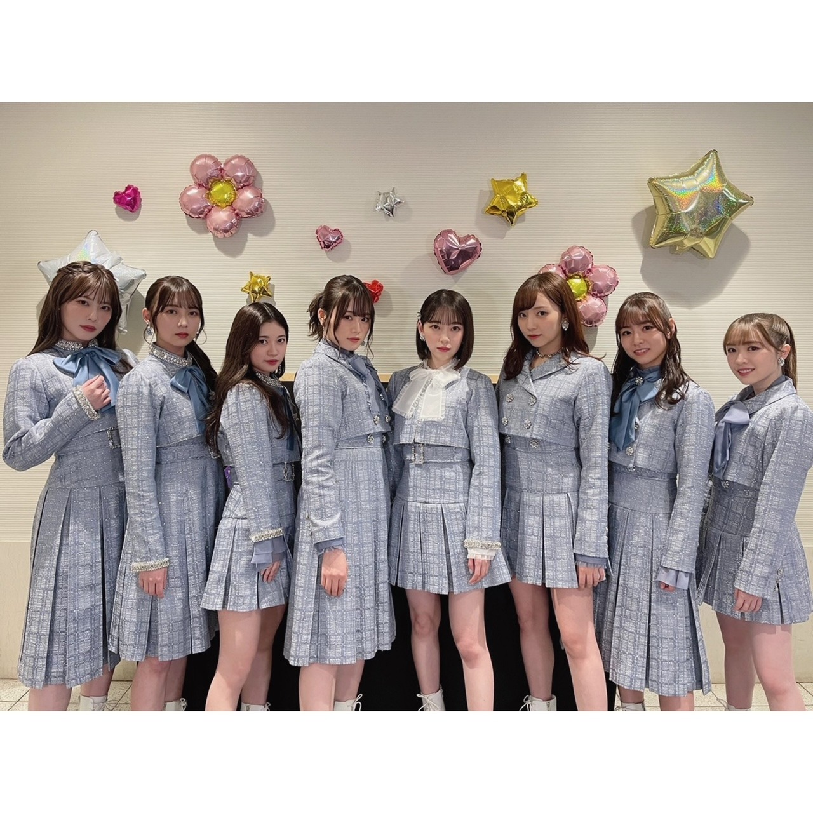
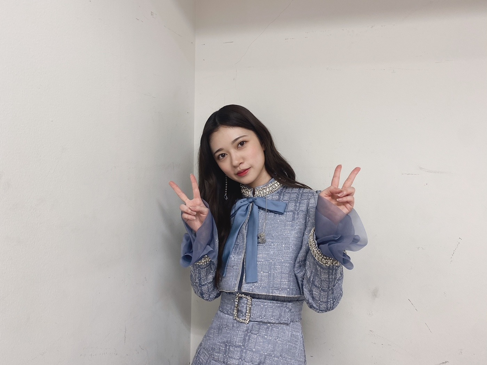

2021/0712Mon栄養とって頑張りましょう。！
握手会時代から少し体調がすぐれなくても
参加させてもらったり
私がこんなに発言や言葉だけでなく
イベント事を本当に大切に思っているのは
自分がどんなに辛いときでも
私の為に時間を割いてくれる人達がいて
そして1回1回は、決して長い時間では
無いかもしれませんが沢山の想いをぶつけてくれて
そしてそれを私は原動力に
変えられる人だから握手会やミーグリ、イベントが
私は大好きなんだと思います。
綺麗な言葉や力のある言葉に
何度も救われたから
私は、握手会やミーグリ、その他のイベントも
何があっても参加してきましたし
これからも勿論変わらずに大切にしていきます。☺️✨
だからこそ、珍しい欠席だったので
心配かけてしまっていたら申し訳ないです。
ツアーも始まると言うことで
大事をとらせていただきました。
らじらーさんありがとうございました。
自分的に体調からいつもより発言に
キレがないのではと心配ではありましたが、、、
とても楽しい時間でした。
藤森さんとそろそろ直接お会いしたいです。
そして、横澤さんとは2回もご一緒して
是非、直接お会いしたいと思っております。
出産までお身体にはお気をつけてお過ごし下さい。
また、お会いできる事楽しみにしております。☺️✨
そして、生誕Tシャツ本日までです。
よかったら是非
個人的にも凄くお気に入りです。
可愛くできましたー。☺️✨
毎年家族会議してデザイン案だして作っています。
私はこのTシャツを弟にプレゼントする気です。
自分にはMサイズを選びました。✨
https://www.nogizaka46shop.com/category/325
こちらからどうぞ。☺️✨
あげようとしていたブログがあるのですが
急遽と言う事で内容前後してしまうと思うのですが
またブログあげます。
ひとまず、ツアー頑張りますので
応援して下さると嬉しいです。！！！
宜しくお願い致します。！！！

生誕グッズの手書きメッセージです。☺️✨

2021/0612Sat
ブログを書いていたのですが
下書きが消え
書き直していたら
ライブだったり
シングル発売だったり
色々書きたい事が増えすぎて
書いては消してを繰り返した結果今に至ります。
ひとまず、ライブありがとうございました。☺️
ユニット企画では
昔の私だったら
背負えないくらい大切な曲も沢山あったりと
心のモノローグはスタッフさん曰く
1番リクエストが多かったそうですよー。☺️✨
曲も膨大にありメンバーも沢山いる中で
絢音ちゃんと披露できた事嬉しく思いました。
アンケートを書いてくださった皆様
本当にありがとうございました。
全部が全部叶うわけではありませんが
願っている事や考えている事を
言葉や声にするのは有限への1番の近道だと
今回のライブで久々に感じられました。
そんなユニット企画には
もう私飽きられるんじゃないかなって
心配になるくらい
曲数参加させてもらっていたのですが、、、
いかがだったでしょうか、、、！
松村さんと
他の現場であったとき
親戚のおばさんみたいにあんた可愛かったよーって
よしよししてくれました。
あんたも可愛いでーって言ったら
満更でもなさそうだったことここに報告します。
それをマネージャーさんにみられてたのも
シュールでしたが
こちらも軍団らしい活動です。
今月もライブ頑張ります。
ツアーも宜しくお願いします。
まだまだコロナが完璧におさまった訳ではありません
100パーセント安全が確保されている訳ではありません。
そんな中での開催です。
引き続きというよりも今一度
感染対策にご協力の程宜しくお願い致します。
夏バテにも気をつけてー。！！
本当はじゅんなとみりあのラストライブという事で
2人への気持ちやら思い出やら色々と書こうと
思っていたのですが、、、
まあやのブログを見てふと思ったことがあり
確かにブログなどで
自分の気持ちや感じた事を
すぐ言葉にしてファンの人に届ける事が
私達のお仕事ではあるけど
無理に急いで気持ちを綴らなくてもいいなのかなって
久々に思えました。
悲しいときは悲しい
楽しいときは楽しい
簡単だけど難しいこの気持ちを
まあやのブログを見て思い出しました。
ひとまず、明日には
乃木坂46を卒業という訳ではありませんし
残りの時間悔いの残らぬように
楽しく過ごしたいです。
悲しいけどメンバーにとっての
卒業は前向きな事なので
あたたかく楽しく笑顔で送り出したいです。☺️
思い出が沢山ある2人
こんなに長く同期として苦楽を共にしてきたから
乃木坂46を離れても仲良くしてくれれば
私はそれで大満足です。☺️✨
これからも仲良くしてね、だけ今は書いておきます。☺️✨
とにかく、無事ライブを終えれて良かったです。
観てくださった皆さん
応援してくださった皆さんありがとうございました。
6月も宜しくお願いします。☺️✨


2021/0506Thuスイートピー
陽気さを与えてくれました。
軍団結成当初
自分の明るい面を表現するのが
難しい時期がありました。
初めは恥ずかしいと思う事も
軍団の活動に沢山ありましたが
琴子も
かりんちゃんも
松村さんも
みんなそれぞれに陽気な人で
かなさんも勿論
親衛隊とされるメンバーの皆さんや
さゆりんご軍団に関わる全ての人が
何故か松村さんと居ると
いつもより笑顔や笑いが多くて
私はその明るさに沢山のことを学びましたし
沢山沢山楽しい思い出も出来ました。
卒業発表という大切な瞬間に
呼んでくれた事何より嬉しく思います。
送り出すのは寂しいけど
笑顔の似合う松村さんですし
卒業は前向きな
大きな明るい一歩だと思っているので
きっと残りの時間は更に楽しい事
いっぱいあると思いますので
楽しんでいきましょう。
LIVEも決まりましたし凄いことですよね。
ユニットでのLIVEなんて異例ですよね。✨
自分は色んなユニットに参加していますが
改めて凄いなーと
他のユニットでもいつかLIVE出来たらいいですね。
今年もあっという間に5月です。
松村さんとも出来るだけ一緒に居たいです。☺️✨
沢山成長したからこそ
感じることが沢山あって
だからこそ生まれる感情があります。
それらは捉え方や感じ方人それぞれ違うから
分かち合う事はとても難しい事だと思います。
だから、私自身もどんな言葉を綴ればいいのか
どんな言葉を綴っても正解がなく
そして捉え方も人それぞれで
解釈がまったく異なるので
毎回ブログを書くのは難しくて
怖くて不安になったりもします。
私としてはどんな環境にいても
自分らしさを大切に日々を過ごしてきました。
やってきた事と
それを見て応援してくれる人やあたたかい言葉
それだけがずっと私の心の支えです。
誰にでも大変な事があり悩む事もあると思います。
私自身も人間なのであります。
でも、それは成長し続けている証だと
自分を認めてあげたいですし
皆さんも是非自分を大切にしてあげてください。
とにかく人に感謝して
大切なものを優しく抱えて感謝して
毎日胸を張って人生を楽しみたいです。✨
最近ファンの人と直接会う機会は
なかなかありませんが元気にしていますか。？
会えなくても声は
皆さんが思っているよりも
私には届いています。✨
久々に真面目な話をさせて貰いましたが
なにを伝えたいかと言うと
皆さんには自分を大切にして欲しいと言うことと
私は沢山素敵な人達に出逢えて幸せですということ
コロナ禍でなかなか明るいニュースを
届けることが難しくてもどかしいのですが
これからもお互い楽しい日々にしましょう。☺️✨
これが伝わってくれれば何よりです。
皆さんの事
人として友人として大切に思っています。
ひとまず、ミーグリにも参加してますので
宜しくお願い致します。☺️✨
ライブも決まりました。
ちゃんとご飯と睡眠と栄養とって
大変なご時世で
先が見えないからこそすごく不安にもなりますが
色々と乗り越えていきましょう。
私、本日2021/05/06は


最後まで読んで下さり

2021/0404SunLIVEの話など、、、！
乃木坂46に色を添えれた事
嬉しく思うことが増えてきました。
昔は不安の方が大きすぎたり
がむしゃらに歩むことしか出来なくて
何があってるのか
何が正解なのか
答えのない世界を皆んなで
手探りの日々でした。
自分達の辿った道をふと振り返った時に
一つ一つの行動や出来事
何気ない言葉や仕草も
全て一つでも変わっていたら
今の乃木坂46は無かったと思うと
乃木坂46の一人として
歩んで来れたことを
凄く誇りに思う日々です。
きっと更に歩んで
また、振り返った時に
今いる場所にも感じる事があるんだろうと思うと
日々大切にしているつもりではありましたが
もっと大切にしようと思えます。☺️✨
短くてもLIVE前にブログあげたかったのですが
少しでもみおなのいる楽屋を楽しんでいたら
LIVE直前にまとまらなくて
結果しっかり気持ちを
まとめてブログ更新させてもらいました。
当日は準備にも追われていたので
写真もちゃんと撮りたかったのに、、、
あまり写真がございません、、、

乃木中みて頂けましたか。
みていただければ分かると思うのですが
2期生って凄く凄く仲良しです。☺️✨
あの空気感独特と思われる人もいるかもしれませんが
何故か思わず笑ってしまう
何かと面白い人の集まりだったのです。
テレビでなかなか
披露する機会がなかったと思います。
ライブや作品になる私達はいつも何故か笑顔でいるよりも凛々しい顔をしてる姿をお見せすることが多く
でも、私達は昔からずーっとこんな感じです。
じゅんなのツッコミも昔からあのクオリティーで
乃木中のひな壇で隣になると
独り言のように皆んなに突っ込んでます。
日々の訓練が生きてます、、、
2期生あれがいつものクオリティーです。
そんな個性が輝いているのも
今までの経験が元から持っていた個性を
最大限に引き出してくれているのかなーと
とにかく、スタジオでみてくれたメンバーや
スタッフさんやバナナマンのお二人も凄く
楽しんでくれていて
2期生皆んな幸せな気持ちになりました。☺️✨
また、乃木坂46全体でもロケしたいですね。✨
私には日村賞があるのですが、、、
どんどん日村賞を取った時にスタジオに居た
メンバーが居なくて寂しい気持ちにもなります。
日村賞精算もお願い致しますよー。✨
歌番組や生配信
LIVEなど色々と本当にありがとうございましたな
ここ数日間でした。
そして、みおなとの最後を色々と共に
出来て何より嬉しかったです。
そして、乃木恋のイベントも
心からありがとうございました。
イベント会場に流れているBGMが
私の大切にしている楽曲ばかりで
愛を感じました、、、✨
久々に近くでファンの人を見て安心しました。
近くで会うのはお久しぶりすぎて
緊張もしたのですが
とても、楽しい空間でした。
体調には皆さんも気をつけて
また、LIVEだったりオンラインのイベントでも
仲良くして下さい。✨
2021/0317Wed好きな果物はなんですか。？
苺にみかんこの辺が特に好きな果物です。✨
西瓜も大好きなのですがこの時期見かけないので、、、
2日間ミーグリありがとうございました。✨
嬉しい言葉をかけられると
自分は幸せ者だと感じます。☺️✨
こんなに味方がいるんだーって感じられる
瞬間の一つです。
ぶりっ子もしませんし
そんなにテンション高い性格でもありませんが
皆さんが思っているより私はきっと
結構楽しんでいます。
本当にありがとうございました。✨
今週もありますね。
お話しできる方は是非お手柔らかに
宜しくお願い致します。✨
それと、くろみちゃんがブログで
私のブログについて書いてくれてましたー。
わーい。✨
くろみちゃんありがとー。
とても、ファンの人想いなブログ
私もいつもこっそり覗いてますー。
メンバーのブログ読むの好きなので
よく読んでいるのですが
この前Instagramのストーリーに飛鳥さんとの
エピソードを書きまして
ブログ書いてくださいって
birthday liveの合間に話したの覚えてますか
良かったら書いてくださいーとストーリーに
書いたのですが
ミーグリの日にこの事を覚えているか話したら
書こうとは思ってますとの事なので、、、
気長にお待ちしております。✨
にやにや。